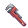

Using a  Wrench will toggle it between movable and dispensing mode.
When in dispensing-mode and in a powered room, it can dispense pipes and pumps for use.
You are able to dispose of unwanted pipes and pumps by using them on the Pipe Dispenser.
[Show/hide] Dispensable Items:
Pipes:
- Regular pipes: Your standard pipes, used for connecting all your atmospherics machines. These can be straight pipes, curved pipes, 3-way manifolds, and 4-way manifolds.
Devices:
- Connector: Used to attach canisters, pumps or scrubbers to a pipe network. If you can't get a pipe network easily to the filter loop, an empty canister can be a good substitute.
- Unary vent - See: Vent. Once placed down it will have to be turned on by activating it at an Air alarm terminal.
- Injector: Sort of like a vent, except it pumps using volume and constantly injects gases. Good for open-turf air tanks.
- Gas pump: The basic pumps you'll find all over Atmospherics. Good for precise pressure levels. Goes up to 4500 kPa.
- Passive gate: Think of it as a one-way manual valve, but electronic. It equalizes gases between the input and output up to the set pressure. Can let up to 4500 kPa pressure through. It should be noted that its on status can be easy to miss, being just a small red/green light.
- Volume pump: A bit like the gas pump, but pumps via volume rather than going for pressure. 200 l/s (~9000 kPa) is its max output. Faster than a gas pump (you can fill canisters up past the standard 4500 kPa pressure!), so best used in systems where precise pressure isn't needed (such as anything to do with the waste loop).
- Scrubber: Self explanatory, scrubs gases out of the air. It can also be set to siphon out gases. Like unary vents, these need to be turned on using an air alarm after they've been placed.
- Meter: Wanna know how much gas (and its temperature) is in a pipe? Use these.
- Gas Filter: Filters gases. Filtered gases come out the side, unfiltered gases go straight through. Pumps using volume.
- Gas Mixer: Like a filter, but mixes gasses instead of filters. Port 1 is the rear port, port 2 is the side port. Pumps using volume.
- Temperature Gate: Prevents gases from flowing through if the gases on the input side are either above or below the set temperature. You can use a multitool to change whether it lets gases above/below the set temperature through.
- Temperature Pump: Moves heat from one connected pipeline to the other. Sorta like using heat exchangers, but smaller and less efficient.
- Relief Valve: A valve that automatically opens at a certain pressure. Useful for preventing overpressure in a pipe net (such as during a plasmafire). The unary version opens to the environment, and the binary version opens to another pipenet.
Heat Exchange:
- Pipes: H/E pipes transfer temperatures between the environment and the gases within the pipe. This can be used to heat gases in a pipe quickly, or when combined with freezers/heaters and a high heat capacity gas it can be used to cool/heat a room quickly.
- Junction: This pipe allows you to connect regular pipes to heat exchange pipes.
- Heat Exchanger: These strange and esoteric devices equalize the temperature between two pipe networks without actually mixing the gasses. To use, place them facing each other.
|